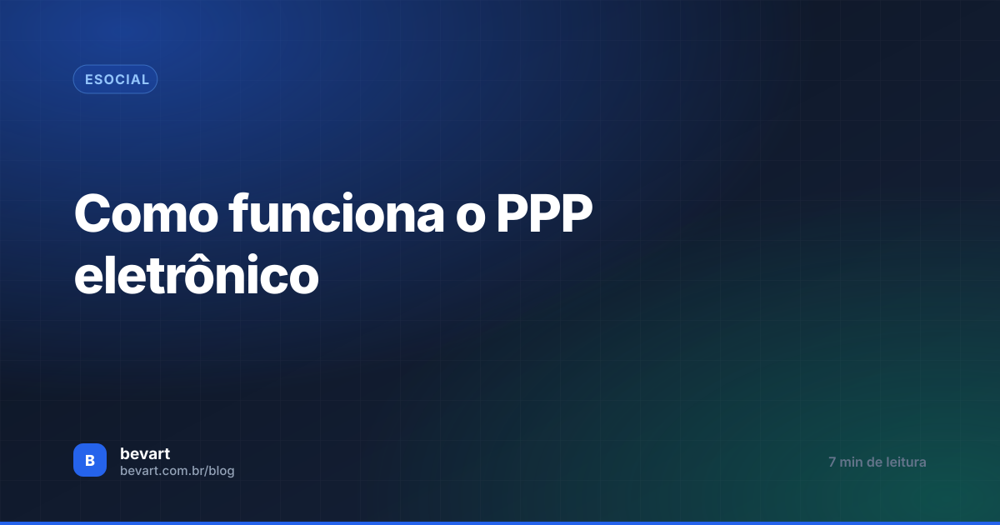

Como funciona o PPP eletrônico
O perfil profissiográfico deixou de ser um documento montado na demissão. Hoje ele é construído em tempo real pelos eventos que a empresa envia — e é aí que mora o risco.

O essencial em 30 segundos
- O PPP é o documento histórico-laboral de quem exerce atividade especial: cargos, atividades, exposição a riscos, registros ambientais e monitoração biológica.
- Com o eSocial, ele é montado a partir dos eventos: S-2220 traz a monitoração biológica e S-2240 traz o ambiente e os agentes nocivos.
- Mudou a função, o setor ou o risco? O S-2240 dos afetados precisa ser enviado — o histórico se forma por essas mudanças.
Durante décadas, o PPP foi um documento de fim de linha: o funcionário pedia demissão e alguém corria atrás de anos de laudos, medições e exames para montar o perfil. Com o eSocial, esse paradigma virou. As informações passam a ser declaradas enquanto acontecem, e o perfil é consequência do que já foi enviado.
Quem entende isso muda a rotina de SST. Quem não entende só descobre o problema quando o trabalhador solicita aposentadoria especial e o histórico está furado.
O que é o PPP
O Perfil Profissiográfico Previdenciário é o documento histórico-laboral do trabalhador que exerce atividades especiais. Nele entram:
- dados administrativos;
- cargos ocupados;
- descrição das atividades;
- exposição a fatores de risco;
- registros ambientais;
- resultados de monitoração biológica de todo o período.

O que muda com o eSocial
A forma de levantar e documentar essas informações mudou. Antes, o documento era elaborado no momento da demissão; agora, os dados chegam ao governo de forma digital e contínua:
| Informação | De onde vem |
|---|---|
| Monitoração biológica (exames e ASO) | Evento S-2220 |
| Ambiente, agentes nocivos e EPI/EPC | Evento S-2240 |
| Cargos, atividades e vínculo | Eventos de cadastro e do vínculo |
Em outras palavras: o eSocial vai formando o histórico. Não existe um momento em que alguém "faz o PPP" — existe uma sequência de envios que, somados, são o PPP.
O S-2240 precisa ser reenviado sempre que a condição do trabalhador muda: nova função, mudança de setor, alteração de agente nocivo, novo EPI, fim da exposição. Empresa que envia só na admissão congela o histórico — e o perfil vai refletir uma realidade que acabou anos atrás.
Como se manter em conformidade
O desafio deixou de ser produzir o documento e passou a ser manter o envio em dia. Na prática, dois hábitos resolvem a maior parte:
- Envio na admissão. Todo trabalhador que entra recebe o evento da condição ambiental dele.
- Envio na mudança — só para quem foi afetado. Alterou o ambiente de um GHE? Não é a empresa inteira: são os trabalhadores daquele grupo. Identificar esse recorte na mão, em empresa com centenas de vínculos, é onde o processo desanda.
É por isso que esse controle depende de sistema. Além de transmitir e manter um painel de acompanhamento, o Bevart permite que os responsáveis pelo ambiente sejam notificados a cada mudança de função ou de risco, com os afetados listados para atualização.

Mudou o risco? O sistema sabe quem precisa de novo evento
Alterações no ambiente listam automaticamente os trabalhadores afetados, com alerta para o responsável e envio direto ao eSocial.
Criar conta grátisO que fazer a partir de agora
- Confira se todo vínculo ativo tem S-2240 correspondente à condição atual.
- Defina um gatilho interno: mudança de função no RH dispara revisão do evento.
- Trate divergência entre laudo e evento como urgente — o PPP é montado pelo evento, não pelo laudo guardado na pasta.
Para entender o conteúdo de cada evento, veja o guia dos eventos S-2210, S-2220 e S-2240.
Perguntas frequentes
Ainda preciso entregar o PPP em papel na demissão?
A lógica mudou: as informações que compõem o perfil passam a ser declaradas ao eSocial ao longo do vínculo, e o PPP é formado a partir delas. O que a empresa precisa garantir é que os eventos de SST estejam completos e atualizados.
Quais eventos alimentam o PPP eletrônico?
Principalmente o S-2240, que informa as condições ambientais e os agentes nocivos, e o S-2220, que traz a monitoração biológica da saúde do trabalhador, somados aos eventos do vínculo.
Preciso reenviar o S-2240 quando muda o ambiente de um GHE?
Sim, mas apenas para os trabalhadores afetados por aquela mudança. O evento descreve um período de condição: cada alteração encerra uma condição e abre outra.
O que acontece se o histórico estiver incompleto?
O perfil do trabalhador fica divergente da realidade, o que costuma aparecer no pedido de aposentadoria especial. Corrigir anos depois exige retificação de eventos e prova documental do período — bem mais caro do que enviar na hora certa.